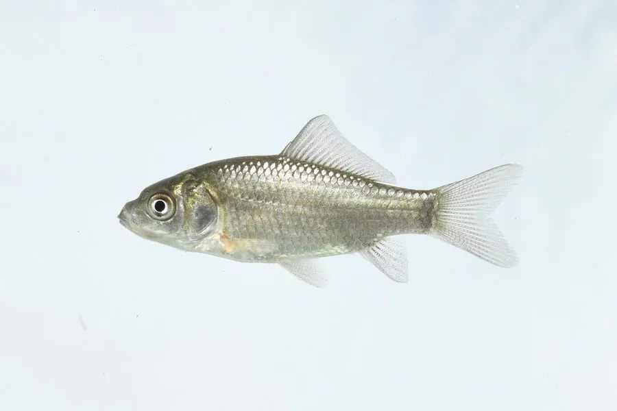

鱼类 · 动物界
鲫鱼 Carassius carassius

欧洲至西伯利亚的淡水鲫鱼，体高侧扁、背鳍长，耐低氧和低温，能在小型静水水体中存活，是常见的食用鱼。
- 分类
- 门脊索动物门纲辐鳍鱼纲目鲤形目科鲤科属鲫属
- 栖息环境
- 水流缓慢、水草茂密的河流、湖泊、池塘和沼泽
- 地理分布
- 欧洲中部和东部、西伯利亚至中国北方的淡水水域
- 保护级别
- IUCN 无危（LC）；中国未列入国家重点保护野生动物名录
物种志
鲫鱼体呈卵圆形，侧扁而高，背鳍长，起点在腹鳍之前，口小，无须。体色背部灰褐或青铜色，体侧金黄或银灰，腹部浅黄。成鱼体长一般 20–40 cm，最大可达 50 cm，体重 1–2 kg。它的鳞片较大，侧线明显，尾鳍分叉。
鲫鱼分布于欧洲中部和东部、西伯利亚至中国北方的河流、湖泊和池塘。它喜欢水流缓慢、水草茂密的水体，耐低氧和低温，冬季能在冰下存活，缺氧时可进行酒精发酵产生能量。鲫鱼是杂食性鱼类，吃浮游动物、昆虫幼虫、藻类和植物碎屑。它生长较慢，但适应力强，是常见的食用鱼和游钓鱼。由于分布广、种群稳定，IUCN 评估为无危。
形态与习性
- 食性杂食性，吃浮游动物、昆虫幼虫、藻类和植物碎屑
- 体长一般 20–40 cm，最大可达 50 cm
- 体重一般 1–2 kg
- 耐受力耐低氧和低温，冬季能在冰下存活
- 外形体高侧扁，背鳍长，口小无须
- 繁殖春季在水草间产卵，卵黏附在水草上
趣味知识
- 鲫鱼耐低氧，缺氧时能通过酒精发酵产生能量。
- 它能在冰封的池塘里越冬，是分布很广的淡水鱼。
- 鲫鱼背鳍很长，起点在腹鳍之前，可与鲤鱼区分。